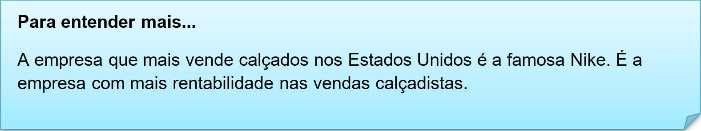
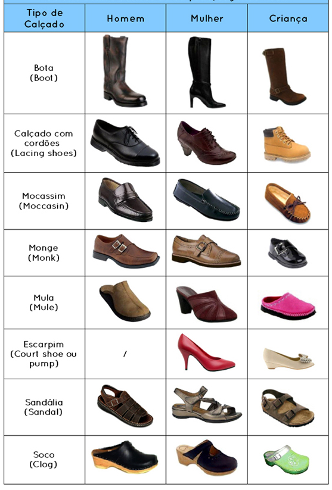
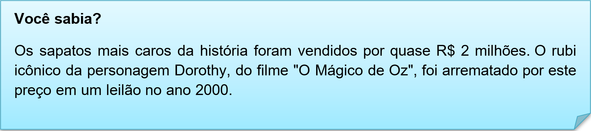

Capítulo 2 - Footwear Sector – Setor Calçadista
The Footwear industry consists of companies engaged in the manufacturing of footwear such as dress shoes, sneakers, slippers, boots, galoshes, sandals and athletic and trade related footwear. The industry also includes footwear parts such as shoe laces, buckles, clasps, inner soles, heels and padding. The Footwear industry excludes leather stock for shoes, classified in Textiles & Leather Goods.
Nesse texto introdutória extraído do jornal New York Times, fala sobre a indústria calçadista nos Estados Unidos e cita todos os itens que envolvem esse setor. Vamos ver a tradução para compreender melhor.
A indústria de calçados consiste em empresas envolvidas na fabricação de calçados, como sapatos, tênis, chinelos, botas, galochas, sandálias e calçados esportivos e relacionados ao comércio. A indústria também inclui peças de calçados, como cadarços, fivelas, fechos, solas internas, saltos e estofados. A indústria de calçados exclui o estoque de couro para calçados, classificado em Têxtil e couro.

Contextualizando – Modelos mais comuns de sapatos

Reconstruindo conhecimentos – Expressões referentes a vocabulário calçadista
Para fazermos uma comunicação simples dentro desse vocabulários é preciso conhecer expressões de uso comum, vamos a elas.
Frases que você pode ouvir:
• Can I help you? (Posso te ajudar?)
• Are you being served? (Está sendo atendido/a?)
• What (shoe) size do you take? (Que número você calça?)
• What size are you? (Qual é seu tamanho?)
• Would you like a larger size? (Você quer um tamanho maior?)
• Would you like a smaller size? (Você quer um tamanho menor?)
• Would you like to try it on? (Gostaria de experimentar?)
• The fitting rooms are here. (Os provadores estão aqui.)
Frases que você pode falar:
• I’m just looking, thank you. (Estou só olhando, obrigado/a.)
• It doesn’t fit. (Não cabe.)
• It’s too big. (É grande demais.)
• It’s too small. (É pequeno demais.)
• Do you have any others? (Você tem outros?)
• Vou levar este/a. (I’ll take this one.)
• How much is it? (Quanto é?)
Lembre-se que a numeração calçadista muda em outros países, veja as tabelas:

O que aprendi
• Nessa unidade aprendemos o vocabulário sobre o setor calçadista;
• Aprendemos a usar as tabelas de medidas dos tamanhos dos sapatos;
• Observamos algumas curiosidades sobre esse setor;
• Aprendemos que a marca que mais vende é a Nike;
• Aprendemos comunicação dentro desse setor calçadista.
Assista ao vídeo e aprenda mais sobre unidades de medidas dos Estados Unidos.
Praticando
Usando nosso dicionário ilustrado de sapatos, faça uma lista classificatória de calçados.
Confortable (confortável)
Social (sapato sociais)
Sporting – (esportivos)
Unidades de medidas dos sapatos. Indique qual a numeração brasileira de cada número e a quem pertence: children, woman, man.
Ten (10) > 26 , children
Thirteen (13) >
Thirty- four (34) >
Thirty-six (36) >
Thirty-eight (38) >
Forty (40) >
Forty-four (44) >
Leia com atenção a frase e escreva o contexto/ideia do texto sobre a indústria calçadista.
The footwear industry constitutes an important sector of the economy of developing countries.